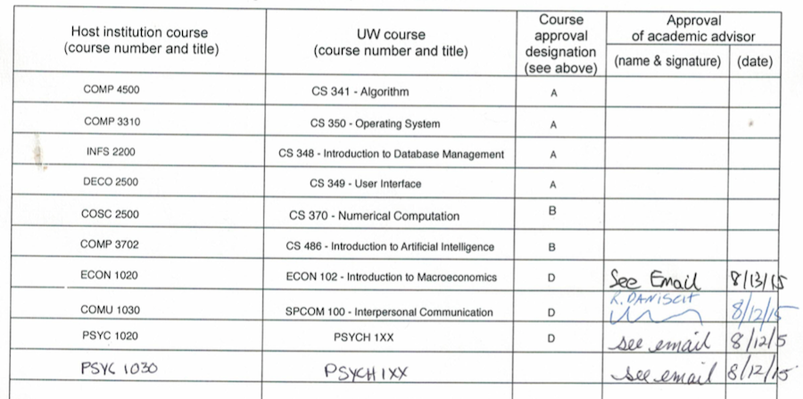
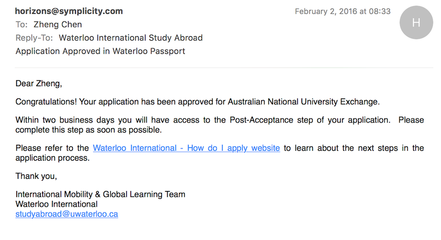

Exchange - The Journey Has Just Started
by Zheng Chen
Updated on February 12, 2016
Making a decision
"To see the world, things dangerous to come to, to see behind walls, draw closer, to find each other, and to feel. That is the purpose of life.”
The Secret Life Of Walter Mitty
“You are always not a person who can understand what ‘settle down’ means!”, that was what my mother said after she knew that I was about to apply for an exchange. I don’t know if this is a compliment or sarcasm, but I always prefer to explore things I’ve never experienced. This is why I traveled halfway from the world coming to Canada from China a few years ago, and this is exactly why I will again travel another halfway from the world going to Australia this year.
Australia has been a dream destination of mine for a long time – the pleasant weather, and the Oceanian culture. However, even before I started thinking about applying an exchange in Australia, there are two tough problems here.
First, the second semester in Australia is from early July to late November. However, in UW, second term is from May to August, and third term is from October to December. This basically means that I have to sacrifice 2 terms in UW to finish a one-term exchange in Australia. I won’t say that, this extra 3 months (May, June, December) will be wasted if I am going for an exchange. The thing is, this will stall my graduation time to early 2019! I just feel like, a 5-year coop program has already become the longest program I can accept for an undergraduate study, this is making it worse. After re-think about this, I feel like having some break is essentially good to be well-prepared for studying. And I can also use those extra 3 months to re-union with my family, and to do some volunteering.
Second thing is that, I am in a coop program, which means that I have a fixed coop sequence to follow, and lots of criterion need to be considered before a sequence change can be approved. After discussing with my coop advisor, a new coop sequence has been decided. Basically there are 2 principle rules for coop sequence: your program must end with a study term, and you cannot have less than 5 coop terms. Here is my coop sequence you can take as a reference:
| F2015 | W2016 | S2016 | F2016 | W2017 | S2017 | F2017 | W2018 | S2018 | F2018 | W2019 |
|---|---|---|---|---|---|---|---|---|---|---|
| COOP1 | 2B | EXCHANGE | EXCHANGE | 3B | COOP2 | COOP3 | 4A | COOP4 | COOP5 | 4B |
Application
In any moment of decision, the best thing you can do is the right thing, the next best thing is the wrong thing, and the worst thing you can do is nothing.
Theodore Roosevelt
Congratulations! The hardest part of your exchange application is done – making the decision. Then it’s the time to submit your application. The application had been significantly simplified after Waterloo International chose to use an online application tool – Waterloo Passport. Just choose your program and school you would like to apply, fill in some forms, pay 25 bucks, and you’re done! Before this online tool was available, I had to get all my transfer course approved BEFORE the application can be submitted. I have to search for the equivalent course on partner school’s website, which took days to finish. And then email the correct advisors in different departments for them to evaluate, which took a few weeks. And then ran to their office to get the signature. And all those work have to be done, before you submitted the application. And by the way, you don’t have to submit a letter stated why you would like to apply for an exchange anymore. I always feel like this letter should be an important part of the application, don’t understand why they chose to dump it. But I still kept my original paper application as a memento.
Now all you have to do is waiting. UW will stop accepting application in early December and give the result of placement in early February.
Placement
I received my placement (nomination) in early February. This basically means that I am 70% done for the exchange application! (Yaaaayyy!)
Then you have to do is, looking for course equivalent, and submit them to Waterloo Passport for approval. Notice that even if you find an equivalent after hours of searching, it might not be offered at the time of your exchange. And even if it is offered, host school might also disallow you to take this course if they feel you are not able to handle this course based on the courses you have taken in UW. So, my suggestion is, always have a backup plan for yourself – prepare for the worst, hope for the best. If you're in BCS, and you will be in 3A during your exchange, and you're applying for ANU, you can take my CS course selections as a reference:

Now you have to wait. Yes, again, wait. ANU will probably send out their application form in mid-March for you to fill out.
Welcome to my Blog!
This is a place to record both my personal and technical experience that I would like to share.